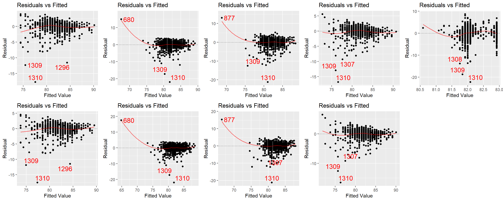
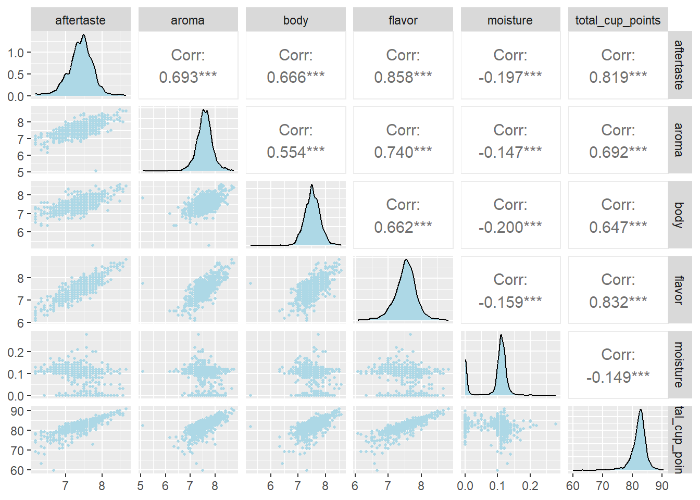
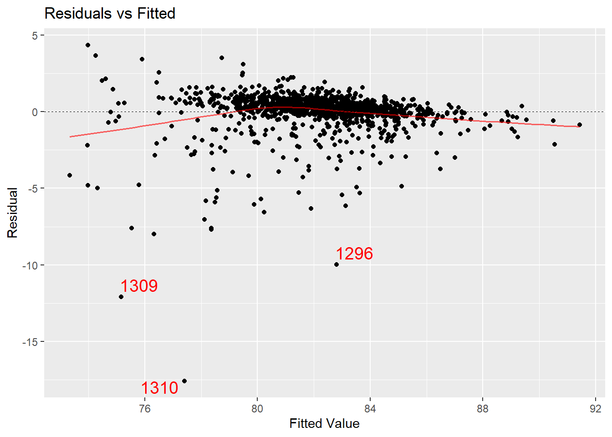
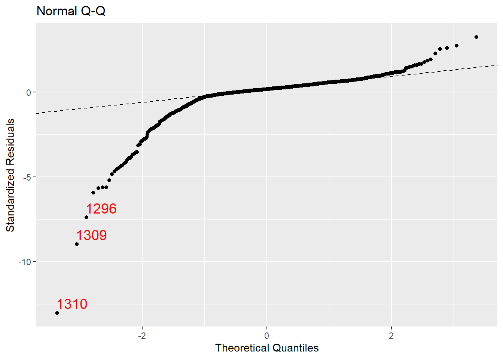
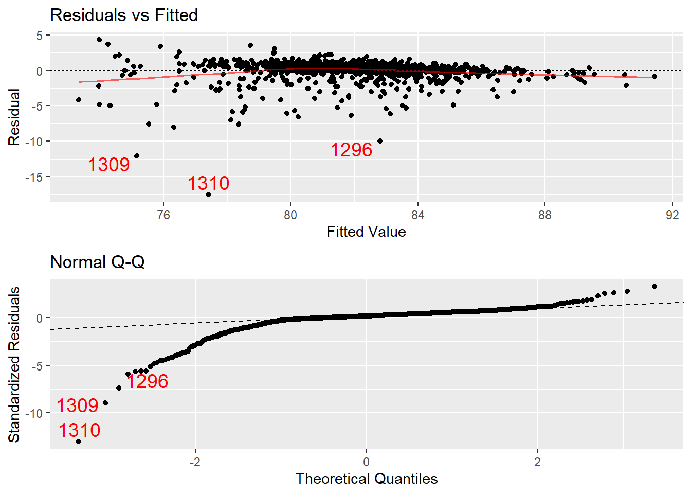
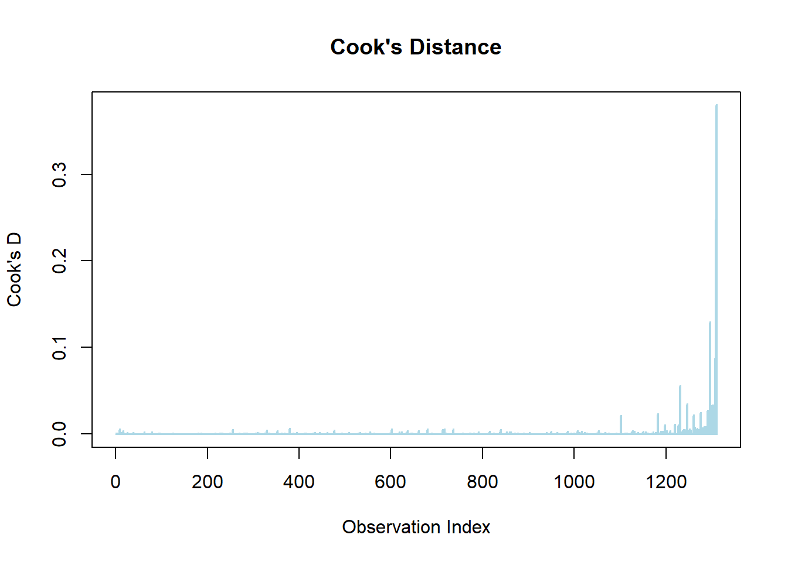
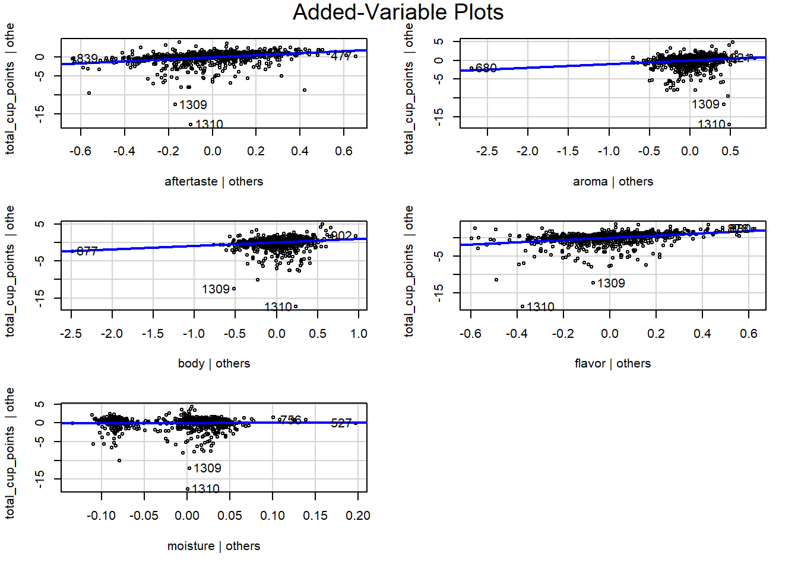

X
Arabica Robusta
1310 28 This study aims to identify the most significant factors contributing to total cup points, a standardized coffee quality rating developed by the Coffee Quality Institute. Specifically, we investigate whether attributes such as flavor or aroma strongly influence overall ratings, and whether certain coffee species consistently receive higher evaluations than others. The analysis is based on a dataset of 1,340 digitized coffee reviews collected by James LeDoux in January 2018 through web scraping the publicly available Coffee Quality Database on Github. The “coffee_ratings.csv” data set contains ratings of different coffee beans from various locations and species. All beans were professionally rated on an overall 0 to 100 scale (total_cup_points) and on various factors such as aroma, sweetness, flavor, etc. While the database is continuously updated, this dataset represents a static snapshot from January 2018 and does not include data collected afterward. Our dataset includes coffee beans sourced globally, allowing us to draw generalizable conclusions about the factors that influence overall coffee quality. These insights can guide producers in optimizing desirable traits and support consumers in making informed, quality-based purchasing decisions.
Our response variable is total cup points (total_cup_points), which is an overall rating of the coffee beans, and it goes from a scale of 0 (worst) to 100 (best) points.
The six total explanatory variables used in this study include five quantitative variables (aftertaste, aroma, body, flavor, moisture) and one categorical variable (species):
Aftertaste (rated on a scale of 0 to 10, with 0 being the worst and 10 being the best) measures how long the coffee’s flavor lingers after swallowing, affecting overall experience.
Aroma (rated on a scale of 0 to 10, with 0 being the worst and 10 being the best) is the smell of the brewed coffee, which is crucial for consumer perception and enjoyment.
Body (rated on a scale of 0 to 10, with 0 being the worst and 10 being the best) describes the texture and mouthfeel of coffee, including oiliness and weight.
Flavor (rated on a scale of 0 to 10, with 0 being the worst and 10 being the best) is a key factor in overall quality, rating the intensity and pleasantness of taste.
Moisture (measured as a percentage of the total weight of the sample) describes the moisture content of beans, which can impact freshness and roasting quality.
Species can be either Arabica or Robusta. Arabica is often associated with higher quality and more complex flavors, while Robusta tends to be stronger and more bitter.
One observation seemed to be an error since it was rated 0 in every quantitative variable, while the second-lowest-ranked bean scored 59.83 cup points and had ratings for aftertaste, aroma, body, and flavor between 6 to 8. We filtered the data set to remove the outlier.
X
Arabica Robusta
1310 28 The bar chart of species indicates that there are 1310 observations of Arabica beans and only 28 observations of Robusta beans. Given that we have so few observations of Robusta included in our data set, it would not make a balanced analysis to include Robusta beans in our data set; we don’t have enough data to predict values for Robusta. As a result, we filtered our data set to include only Arabica beans and removed the species categorical variable.
The density plot for total cup points (mean = 82.15, SD = 2.68), aftertaste (mean = 7.407, SD = 0.35), aroma (mean = 7.572, SD = 0.32), body (mean = 7.523, SD = 0.31), and flavor (mean = 7.526, SD = 0.34) are all normally distributed with no obvious outliers or skewness. The density for moisture looks bimodal with one smaller peak around 0% and one peak around 10-12%.
Since we removed species as a variable, we did not create boxplots of total_cup_points vs. quantitative predictors, with species as a factor.
To check for bivariate relationships between quantitative variables, we created a scatterplot of every combination of quantitative variables and derived their respective correlation coefficients.
Linearity Condition: The scatterplots of aftertaste, aroma, body, and flavor on total_cup_points appear linear, so they fit the linearity condition. The aforementioned quantitative predictors have moderately positive linear relationships with total_cup_points, with their correlation coefficients respectively being 0.812, 0.686, 0.628, and 0.827. Moisture does not appear to have a linear relationship with total_cup_points or any other predictor variables, indicating that it does not pass the linearity condition. There are also two clusters in all moisture scatterplots plots, which reflected the bimodal distribution of moisture.
Equal Variance Condition: We plotted the residuals between our quantitative predictors (respectively, aftertaste, aroma, body, flavor, moisture respectively) and total_cup_points. The relationship between all of our quantitative variables and total_cup_points looks heteroskedastic, as the spread of total_cup_points increases when aftertaste, aroma, body, and flavor are rated low. The relationship between moisture and total_cup_points has a butterfly shape, as the spread increases and decreases throughout different moisture ratings. None of our quantitative predictors fit the equal variance condition, so we transformed them.

Independence Condition: Each bean was rated independently regardless of other beans, so it meets the independence condition.
No Outliers Condition: There are some outliers in the scatterplots between each quantitative predictor and total_cup_points, so it does not meet the no outliers condition. In general, there are a lot of outliers when the fitted value is low.
Collinearity Condition: Given that aftertaste, aroma, body, and flavor have moderate correlations between each other, we would like to check the variation inflation factor (VIF) for possible concerns with multicollinearity. However, we will need to construct a model to check VIF, so we will return to this after building a model.
No transformation could make moisture’s distribution unimodal. Also, it met the fewest of the conditions and had the weakest correlation with total_cup_points, so we removed moisture from the possible variables.
quant_vars <- coffee_data |>
select(aftertaste, aroma, body, flavor, moisture, total_cup_points)
# Create a correlation matrix
cor_matrix <- cor(quant_vars, use = "complete.obs")
print(cor_matrix) aftertaste aroma body flavor moisture
aftertaste 1.0000000 0.6928712 0.6656483 0.8581995 -0.1966740
aroma 0.6928712 1.0000000 0.5540145 0.7403953 -0.1473367
body 0.6656483 0.5540145 1.0000000 0.6616503 -0.1997590
flavor 0.8581995 0.7403953 0.6616503 1.0000000 -0.1591203
moisture -0.1966740 -0.1473367 -0.1997590 -0.1591203 1.0000000
total_cup_points 0.8194878 0.6924888 0.6470746 0.8315098 -0.1487261
total_cup_points
aftertaste 0.8194878
aroma 0.6924888
body 0.6470746
flavor 0.8315098
moisture -0.1487261
total_cup_points 1.0000000# Another matrix
ggpairs(
quant_vars,
lower = list(continuous = wrap("points", color = "lightblue", size = 0.8)),
diag = list(continuous = wrap("densityDiag", fill = "lightblue")),
upper = list(continuous = wrap("cor", size = 4))
)
We ran an automated variable selection approach to select the best subset of predictor variables to include in models of different sizes. Based on the best subsets output, we selected the four-predictor model with aftertaste, body, flavor, and aroma as predictors after including only significant variables and balancing high parsimony, high adjusted R2 (0.737), and low Mallows’ Cp (7.00).
library(leaps)Warning: package 'leaps' was built under R version 4.4.3best_subset <- regsubsets(total_cup_points ~ aftertaste + aroma + body + flavor + moisture, data = coffee_data, nbest = 1)
with(summary(best_subset), data.frame(rsq, adjr2, cp, rss, outmat)) rsq adjr2 cp rss aftertaste aroma body flavor
1 ( 1 ) 0.6914086 0.6911727 278.821022 2914.392 *
2 ( 1 ) 0.7339597 0.7335526 62.292831 2512.532 * *
3 ( 1 ) 0.7405366 0.7399406 30.516160 2450.418 * * *
4 ( 1 ) 0.7457912 0.7450120 5.530285 2400.793 * * * *
5 ( 1 ) 0.7460892 0.7451156 6.000000 2397.979 * * * *
moisture
1 ( 1 )
2 ( 1 )
3 ( 1 )
4 ( 1 )
5 ( 1 ) *After analyzing the correlation matrix and VIF values, we will remove explanatory variables that are collinear with each other (with VIFs higher than 5) and prioritize explanatory variables with the highest correlation to total_cup_points.
subset_model <- lm(total_cup_points ~ aftertaste + aroma + body + flavor, data = coffee_data)
library(car)Loading required package: carData
Attaching package: 'car'The following object is masked from 'package:pracma':
logitThe following object is masked from 'package:purrr':
someThe following objects are masked from 'package:mosaic':
deltaMethod, logitThe following object is masked from 'package:dplyr':
recodevif(subset_model)aftertaste aroma body flavor
4.138218 2.294633 1.916686 4.652150 Though aftertaste and flavor’s VIF values appear to be close to 5, they do not reach or go beyond 5, so there is no significant issue of multicollinearity in our selected variables.
After building the model, we will check conditions of equal variance and normality of errors using residual plots and QQ plots, respectively.
subset_model <- lm(total_cup_points ~ aftertaste + aroma + body + flavor, data = coffee_data)
subset_mod_resid <- mplot(subset_model, which = 1)`geom_smooth()` using formula = 'y ~ x'
subset_mod_normality <- mplot(subset_model, which = 2)
# original model with everything
everything_model <- lm(total_cup_points ~ aftertaste + aroma + body + flavor + moisture, data = coffee_data)
# Organize all resid plots
grid.arrange(subset_mod_resid, subset_mod_normality, nrow = 2)
The equal variance condition appear to be met. However, the lower tail of the Q-Q plot deviates away from the straight line. We will try removing outliers and looking at the conditions again to see if it improves the conditions. To determine outliers that may be influential, we will use Cook’s distance.
cooksD <- cooks.distance(subset_model)
plot(cooksD, type = "h",
main = "Cook's Distance",
ylab = "Cook's D", xlab = "Observation Index",
col = "lightblue", lwd = 2)
# Three-most unusual points in the data set
cooksD[c(1310, 1309, 1296)] 1310 1309 1296
0.3799399 0.2480239 0.1296148 It appears that none of the points have a Cook’s distance greater than 0.5 (for moderate influence) or 1.0 (for high influence), so we should not remove any coffee bean observation.
We also take a look at added variable plots to check if each of the predictors influence our response, total_cup_points, taking into account the effect of other variables
car::avPlots(everything_model) 
The added-variable plots show that points 1309 and 1310 are outliers, but we’ve already calculated Cook’s distances for these points and decided not to remove them based on the cutoff. The predictor variables seem to have positive relationship with the total_cup_points, though the slopes are not very steep (but also not flat!).
Lastly, to compare multiple models, we bring in the kitchen sink model to relate with the subsets model.
kitchen <- lm(total_cup_points ~ aftertaste+aroma+flavor+body+moisture, data= coffee_data)
anova(subset_model, kitchen)Analysis of Variance Table
Model 1: total_cup_points ~ aftertaste + aroma + body + flavor
Model 2: total_cup_points ~ aftertaste + aroma + flavor + body + moisture
Res.Df RSS Df Sum of Sq F Pr(>F)
1 1305 2400.8
2 1304 2398.0 1 2.8141 1.5303 0.2163msummary(kitchen) Estimate Std. Error t value Pr(>|t|)
(Intercept) 25.2835 1.0963 23.063 < 2e-16 ***
aftertaste 2.6341 0.2188 12.041 < 2e-16 ***
aroma 0.9611 0.1798 5.346 1.06e-07 ***
flavor 3.0500 0.2367 12.885 < 2e-16 ***
body 0.9415 0.1779 5.292 1.42e-07 ***
moisture 0.9913 0.8013 1.237 0.216
Residual standard error: 1.356 on 1304 degrees of freedom
Multiple R-squared: 0.7461, Adjusted R-squared: 0.7451
F-statistic: 766.3 on 5 and 1304 DF, p-value: < 2.2e-16It seems that moisture does not add enough information to be a significant predictor of total cup points (p = 0.08 > 0.05), so our subsets model is the best model we can use.
Finally, with our list of explanatory variables that pass the conditions and significant interactions, we created our final multiple linear regression.
final_model <- lm(total_cup_points ~ flavor + aftertaste + body + aroma, data = coffee_data)
summary(final_model)
Call:
lm(formula = total_cup_points ~ flavor + aftertaste + body +
aroma, data = coffee_data)
Residuals:
Min 1Q Median 3Q Max
-17.5741 -0.1226 0.2259 0.5752 4.3546
Coefficients:
Estimate Std. Error t value Pr(>|t|)
(Intercept) 25.6370 1.0586 24.217 < 2e-16 ***
flavor 3.0634 0.2365 12.953 < 2e-16 ***
aftertaste 2.6106 0.2180 11.977 < 2e-16 ***
body 0.9196 0.1771 5.194 2.39e-07 ***
aroma 0.9574 0.1798 5.325 1.19e-07 ***
---
Signif. codes: 0 '***' 0.001 '**' 0.01 '*' 0.05 '.' 0.1 ' ' 1
Residual standard error: 1.356 on 1305 degrees of freedom
Multiple R-squared: 0.7458, Adjusted R-squared: 0.745
F-statistic: 957.1 on 4 and 1305 DF, p-value: < 2.2e-16# ggplot(coffee_data, aes(x = flavor, y = total_cup_points, color = species)) +
# geom_point(alpha = 0.7) +
# geom_smooth(method = "lm", se = FALSE) +
# labs(title = "Flavor vs Total Cup Points by Species",
# x = "Flavor",
# y = "Total Cup Points") +
# theme_minimal()